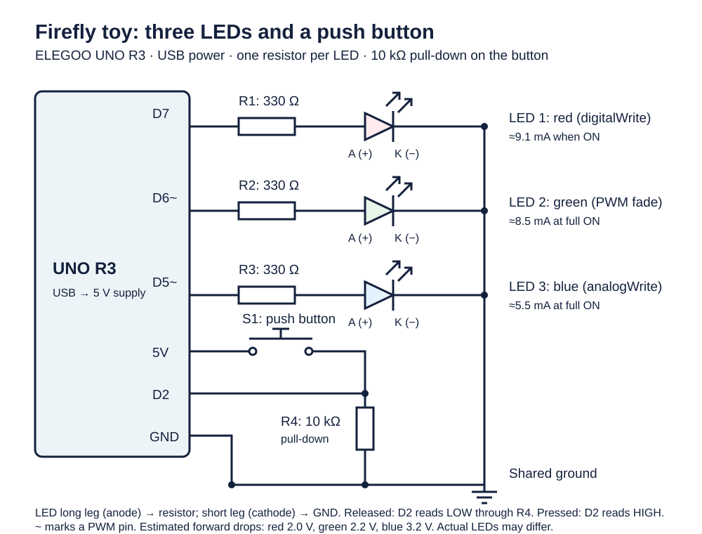
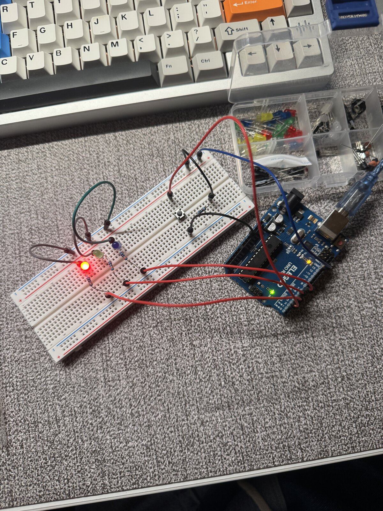
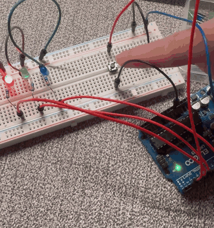
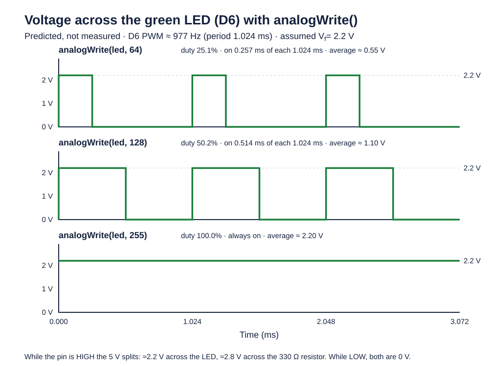

Firefly is a small night-light creature built on an ELEGOO UNO R3. When nobody is touching it, the toy rests with a steady red glow. Pressing and holding the button wakes it up, which turns the red LED off, switches the blue LED fully on, and makes the green LED fade up and down quickly, about one pulse every 0.4 seconds, for as long as the button stays down. When the button is released, the toy finishes the pulse it is in the middle of and returns to its red resting glow. Everything came from the ELEGOO starter kit, and the LED wiring is the same as my holiday-lights circuit, with a push button and a 10 kΩ resistor added.
Schematic

Each LED has its own pin and its own 330 Ω resistor, so the program can control them independently. Red is on D7 and is only ever fully on or off, using digitalWrite(). Green and blue are on D6 and D5, which are PWM pins (marked with ~), so analogWrite() can set their brightness. The program fades green and holds blue at full brightness. The button connects 5 V to D2, and a 10 kΩ resistor connects D2 to ground.
LED resistors. I wanted each LED to draw no more than about 10 mA, which leaves a comfortable margin below the UNO's 20 mA rating per pin. When a pin is HIGH it supplies about 5 V, and the LED takes its forward voltage out of that, so the resistor has to absorb the rest. I assumed typical forward voltages of 2.0 V for red, 2.2 V for green, and 3.2 V for blue (typical figures, not measured). Red has the lowest forward voltage, so it sets the worst case:
R = (Vpin − Vf) / I = (5 V − 2.0 V) / 0.010 A = 300 Ω
The next standard value up in the kit is 330 Ω, and I used it for all three LEDs:
| LED | Assumed Vf | Current with 330 Ω |
|---|---|---|
| Red | 2.0 V | (5 − 2.0) / 330 = 9.1 mA |
| Green | 2.2 V | (5 − 2.2) / 330 = 8.5 mA |
| Blue | 3.2 V | (5 − 3.2) / 330 = 5.5 mA |
For the green LED, this is the current during the on part of each PWM cycle, so its average current goes down as it dims.
Button resistor. A pressed button has almost no resistance, so if it connected 5 V directly to ground it would short the supply. The 10 kΩ resistor sits in that path and limits the current to 5 V / 10,000 Ω = 0.5 mA when the button is pressed, which is small enough to waste almost no power. It also keeps D2 from floating when the button is released, because an unconnected input picks up noise and reads HIGH or LOW at random, and the resistor holds it at 0 V instead. A much smaller resistor, such as 100 Ω, would draw 50 mA every time the button is pressed, while a much larger one, such as 1 MΩ, would hold the input LOW so weakly that noise could still flip it. 10 kΩ is the usual value between those extremes and comes in the kit. The result is that D2 reads LOW when the button is released and HIGH when it is pressed.
Circuit

The UNO is on the right and connects to the breadboard with jumpers. The three LEDs sit on the left side of the board, each in series with its 330 Ω resistor, and their short legs return to the ground rail. The push button straddles the center gap, with one leg on the 5 V rail and the diagonally opposite leg on a row that also holds the jumper to D2 and the 10 kΩ resistor to ground.
Firmware
// Name the digital pin that drives the red "resting" LED on or off.
const byte RED_PIN = 7;
// Name the PWM pin that drives the green "sparkle" LED.
const byte GREEN_PIN = 6;
// Name the PWM pin that drives the blue "awake" LED.
const byte BLUE_PIN = 5;
// Name the input pin connected to the push button.
const byte BUTTON_PIN = 2;
// Set how much the PWM brightness changes on each fade step.
const int FADE_STEP = 5;
// Set the pause between green steps so the sparkle pulses quickly.
const int SPARKLE_DELAY_MS = 4;
// Run the initialization once after reset.
void setup() {
// Configure the red LED pin as an output.
pinMode(RED_PIN, OUTPUT);
// Configure the green LED pin as an output.
pinMode(GREEN_PIN, OUTPUT);
// Configure the blue LED pin as an output.
pinMode(BLUE_PIN, OUTPUT);
// Configure the button pin as an input; the external 10 kΩ resistor pulls it LOW.
pinMode(BUTTON_PIN, INPUT);
}
// Repeat continuously, choosing the toy's mode from the button.
void loop() {
// Read the button: HIGH means pressed, LOW means released.
if (digitalRead(BUTTON_PIN) == HIGH) {
// Play the awake light show while the button is held.
sparkle();
} else {
// Show the resting glow while the button is released.
rest();
}
}
// Glow red steadily with green and blue off.
void rest() {
// Turn the green sparkle LED off.
analogWrite(GREEN_PIN, 0);
// Turn the blue awake LED off.
analogWrite(BLUE_PIN, 0);
// Turn the red resting LED fully on.
digitalWrite(RED_PIN, HIGH);
}
// Turn red off, hold blue on, and pulse green once while the button is held.
void sparkle() {
// Turn the red resting LED off while the toy is awake.
digitalWrite(RED_PIN, LOW);
// Turn the blue awake LED fully on.
analogWrite(BLUE_PIN, 255);
// Step the green brightness up from 0 to 255.
for (int brightness = 0; brightness <= 255; brightness += FADE_STEP) {
// Set the green LED to the current PWM brightness.
analogWrite(GREEN_PIN, brightness);
// Hold this brightness briefly so the pulse is quick but visible.
delay(SPARKLE_DELAY_MS);
}
// Step the green brightness back down from 255 to 0.
for (int brightness = 255; brightness >= 0; brightness -= FADE_STEP) {
// Set the green LED to the current PWM brightness.
analogWrite(GREEN_PIN, brightness);
// Hold this brightness briefly so the pulse is quick but visible.
delay(SPARKLE_DELAY_MS);
}
}The sketch uses two for loops, one to fade the green LED up and one to fade it back down. loop() checks the button with digitalRead() each time it runs. While the button is released, the resting state takes almost no time, so a press is noticed within a fraction of a millisecond. While the button is held, each green pulse runs to completion (about 0.42 seconds) before the button is checked again, which is why the toy finishes its current pulse after the button is let go.
Operation

The clip starts with the toy at rest, showing only the red LED. When the button is pressed, red turns off, blue comes on at full brightness, and green pulses. After the button is released, the toy returns to the steady red glow.
Question 1: voltage across an LED with analogWrite()

analogWrite() values.analogWrite() does not produce a lower steady voltage. It switches the pin fully on and fully off very quickly, and the value from 0 to 255 sets the fraction of each cycle the pin spends on. On the UNO, pins 5 and 6 switch at about 977 Hz, which gives a period of 1.024 ms. The chart shows the green LED on D6. While the pin is HIGH, the LED has roughly its forward voltage across it (2.2 V, assumed), and the 330 Ω resistor takes the remaining 2.8 V. While the pin is LOW, both are at 0 V. At analogWrite(led, 64) the LED is on for 25.1% of each cycle (0.257 ms), at 128 it is on for 50.2% (0.514 ms), and at 255 it stays on continuously. The switching is far too fast to see, so the eye averages it into a dimmer or brighter glow. These waveforms are predictions from the PWM settings, not oscilloscope measurements.
Question 2: total current and battery life
If all three LEDs were fully on at once, they would draw about 9.1 + 8.5 + 5.5 = 23.0 mA, plus 0.5 mA through the button resistor while the button is pressed, for roughly 23.5 mA. My sketch never actually does this, since red is off whenever green and blue are on, so this is a worst case. Each LED stays well under the 20 mA recommended limit for a single pin, and the total is far below the ATmega328P's 200 mA absolute maximum through its power and ground pins, so the circuit is comfortably within the Arduino's limits.
Counting only the external circuit, a 1200 mAh battery would last about 1200 mAh / 23.5 mA ≈ 51 hours. That leaves out the UNO board itself, which draws its own current for the microcontroller, the USB chip, the voltage regulator, and the power LED. Using an estimate of about 50 mA for the board (not measured), the total becomes 1200 / (23.5 + 50) ≈ 16 hours. Real batteries rarely deliver their full rated capacity, so the actual runtime would be somewhat shorter. In normal use, at most two LEDs are lit at a time and green spends much of each pulse dimmed, so the LEDs' share of the current would be lower than this worst case.
Question 3: measured LED voltage
I measured the voltage across the red LED while the toy was resting, because that is when red stays steadily on, whereas the fading green LED switches on and off too quickly for a multimeter to give a stable reading. I read about 1.9 V, slightly below the 2.0 V I assumed in my resistor calculation and within the usual range of 1.8 to 2.2 V for red LEDs. An LED's forward voltage rises with current, and typical datasheet values are often given at 20 mA, while this LED runs at about 9 mA, which would explain a slightly lower reading. The UNO's pin also sags a little under load, to roughly 4.8 to 4.9 V, which puts the current at about (4.85 − 1.9) / 330 ≈ 8.9 mA, close to the 9.1 mA I calculated. The remaining difference comes from the particular LED, its temperature, and the accuracy of the meter.